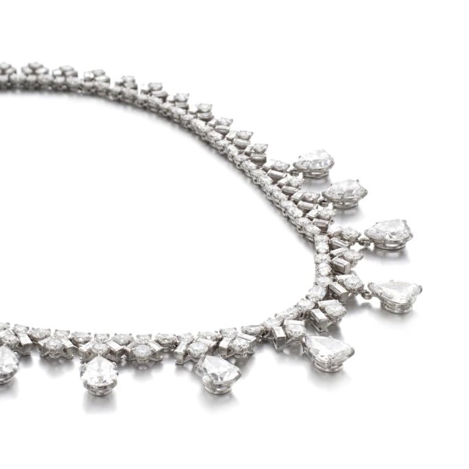
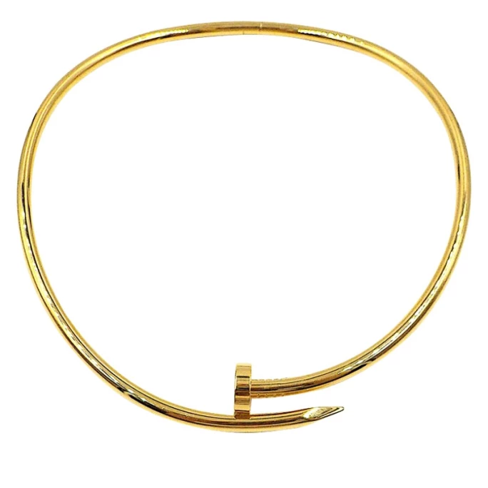
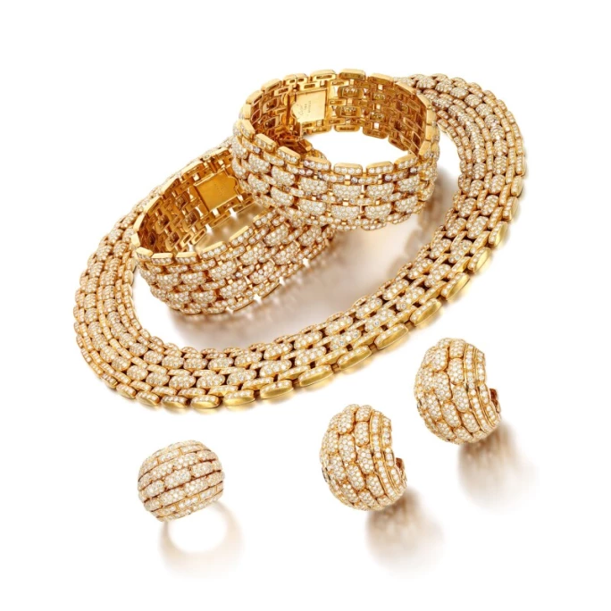
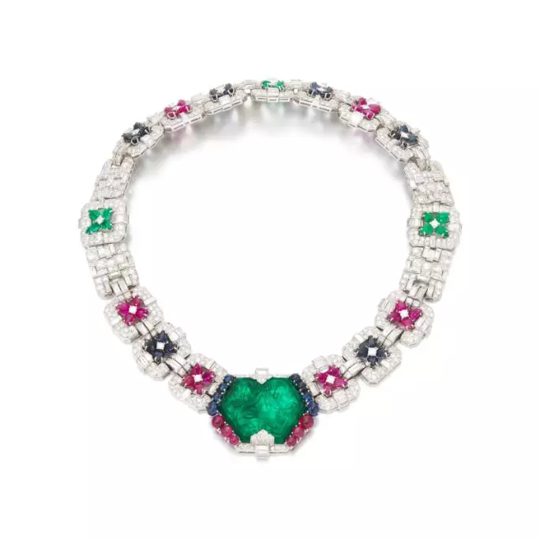
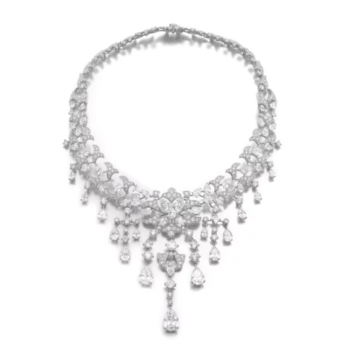

譯自 Lydia Dokko · Sotheby's
細品卡地亞傳世項鏈之臻選。
品牌傳奇
卡地亞創於 1847 年，由路易·弗朗索瓦·卡地亞（Louis-Francois Cartier）匠心築夢，首間精品殿堂在 12 載後開張。在查爾斯·雅克（Charles Jacqueau）、皮埃爾·勒馬奇（Pierre Lemarch）等巧藝大師，以及靈思如潮的創意總監珍妮·杜桑（Jeanne Toussaint）攜手之下，卡地亞將萬千靈感化為珠寶瑰寶，每件作品皆是時代的優雅印記。阿爾多·奇普洛（Aldo Cipullo）為品牌譜寫新篇，以 1969 年的 Love 系列與 1971 年的 Juste un Clou 系列，為現代珠寶藝術開闢新境。
1993 年，卡地亞與其他品牌合併組成「Vendome Luxury Group」，集團其後更名為「歷峯集團」，旗下共有梵克雅寶、寶詩龍等 19 個奢侈品牌。卡地亞光芒璀璨，每月 Google 搜尋逾 500 萬次，受歡迎程度非同凡響。2023 年，蘇富比成交的卡地亞珠寶總值近 3,000 萬美元，拍品價格自 5,000 美元至 280 萬美元不等，可見品牌的懾人魅力。

卡地亞高級珠寶鑽石項鏈
卡地亞珍稀收藏級項鏈
無論您是資深藏家，抑或初為卡地亞之美所傾心，我們精心甄選四款稀世項鏈風格供您品鑑。雖然當中部分臻品可遇不可求，這些設計仍可為您開啟卡地亞珍藏之門。我們之所以選擇這些款式，在於它們不僅蘊含永恆優雅的設計美學，更完美彰顯品牌標誌性元素，見證卡地亞世代相傳的卓越工藝與奢華典範。若您有意為珍藏增添一件稀世佳作，誠邀您品鑑以下四種獨特風格。

卡地亞 JUSTE UN CLOU 項鏈
卡地亞 Juste un Clou 系列
繼 1969 年的經典之作 Love 手鐲後，卡地亞傳奇設計師阿爾多·奇普洛在 1971 年創作出 Juste un Clou 手鐲。他以匠心獨運，將一枚簡單釘子昇華成優雅時尚之作，盡顯前衛精神。此系列初名為「卡地亞釘子手鐲」，靈感源於日常物件的純粹之美。如同 Love 手鐲一樣，Juste un Clou（法語意為「僅是一枚釘子」）為卡地亞現代成就與品牌形象奠定重要基石。2012 年，適逢品牌 165 週年之際，此系列重現光彩，延展至項鏈等全系列珠寶。今日，Juste un Clou 與 Love 和 Panthère 系列同為卡地亞經典珍藏，其項鏈往往為藏家入門首選。

卡地亞 MAILLON PANTHÈRE 系列項鏈及配套手鐲、耳環與戒指
卡地亞 Panthère 系列
Panthère de Cartier 美洲豹圖騰自 1914 年問世以來，始終是卡地亞最具代表性的經典象徵。品牌與美洲豹的淵源可追溯至 1913 年，一幅名為「Dame à la Panthère」的廣告中，優雅女士與黑貓相映成趣。據說，路易·卡地亞選用美洲豹設計，源於對珍妮·杜桑的敬意；他親暱稱她為「小美洲豹」，因為她以一襲美洲豹皮草長衣聞名於世。1948 年，卡地亞為溫莎公爵夫人華麗絲·辛普森（Wallace Simpson）打造首件 Panthère 珠寶：一枚金質琺瑯胸針，綴以蛋面祖母綠。Panthère 系列項鏈是藏家翹首期盼的珍品，其中 Maillon（鏈節）款尤為矚目，鑲鑽版本更是經典中的經典。每一鏈節皆巧妙獨立相連，貼合頸部曲線，靈動優雅，恰似美洲豹婀娜身姿。

卡地亞寶石鑽石項鏈，約 1930 年作
卡地亞鑽石寶石項鏈系列
卡地亞與印度彩寶淵源深厚，以法式工藝重新詮釋東方瑰寶。1911 年，雅克·卡地亞（Jacques Cartier）遠赴印度，親臨喬治國王加冕盛典。此行令卡地亞邂逅印度珠寶雕刻藝術，開啟斐然新篇。有別於 20 年代盛行的白鑽花環、蝴蝶結裝飾與幾何藝術裝飾風格，印度雕刻寶石為卡地亞注入異域靈感。創於約 1930 年的這條項鏈，中央鑲嵌一顆經雕刻的哥倫比亞祖母綠，將藝術裝飾時期的幾何美學與印度珠寶的絢麗色彩完美融合，堪稱珍罕收藏臻品。這類獨特的彩寶傑作鮮有現身市場，向來備受卡地亞藏家青睞。

卡地亞花葉紋飾鑽石項鏈
卡地亞高級珠寶項鏈系列
自 1902 年愛德華七世委託卡地亞打造 27 頂后冠開始，品牌與皇室的不解之緣延續至今。愛德華七世曾譽卡地亞為「皇者之珠寶商，珠寶商之王者」。此美譽使卡地亞成為皇室貴胄、顯赫名流與星光名人的摯愛珠寶品牌。為公主度身訂製的花葉紋飾鑽石項鏈，堪稱卡地亞高級珠寶藏家夢寐以求的臻品。此作以明亮式切割、梨形與枕形鑽石鑲嵌而成，鑽石品質臻至 D 至 F 色，純淨度從內部無瑕至 VS2，盡顯卡地亞的至臻工藝。